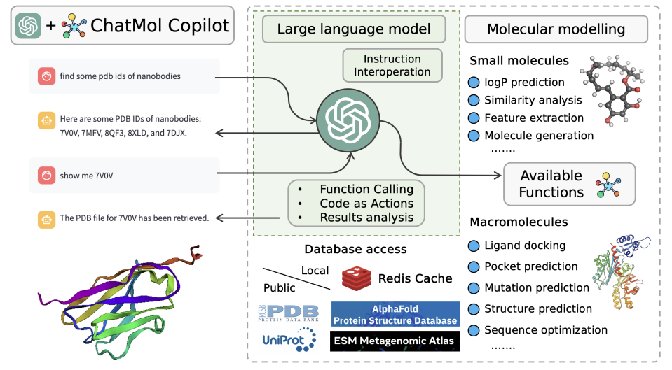
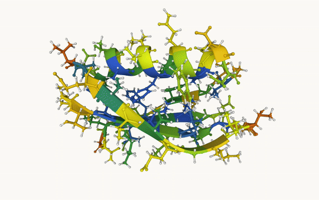

FLAGSHIP PRODUCT
ChatMol Lab
An AI scientist agent that combines NVIDIA BioNeMo cloud tools, 50+ biological databases, code execution, and interactive 3D visualization. Design proteins through natural conversation.
- 11 BioNeMo NIM tools (ESMFold, OpenFold, Boltz-2, RFDiffusion, DiffDock, etc.)
- 50+ databases (UniProt, PDB, PubMed, ChEMBL, AlphaFold DB, etc.)
- Python code execution with BioPython integration
- Interactive 3D Molstar viewer for structure visualization

OPEN SOURCE
ChatMol Copilot
A conversational platform integrating bioinformatics and AI tools. From data retrieval to molecular visualization — all through chat.
- Natural language interface for molecular queries
- Integration with RDKit and molecular databases
- SMILES/SMARTS pattern matching and generation

OPEN SOURCE
GROMACS Copilot
An autonomous AI agent for molecular dynamics simulations. Handles environment setup, workflow generation, and error correction.
- Automated GROMACS workflow setup
- Topology and parameter file generation
- Trajectory analysis and visualization
OPEN SOURCE
PymolFold
PyMOL plugin integrating structure prediction and analysis capabilities. Brings AI-powered protein folding and design tools directly into your PyMOL workflow.
- Direct integration with PyMOL
- Structure prediction via ESMFold/Boltz-2
- Interactive protein design and analysis